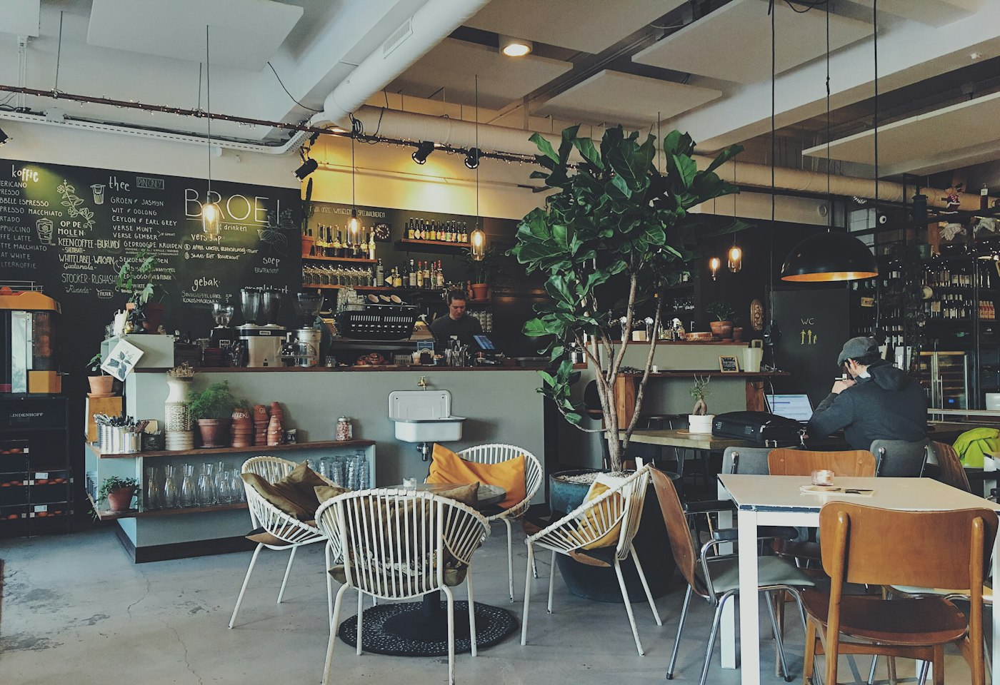
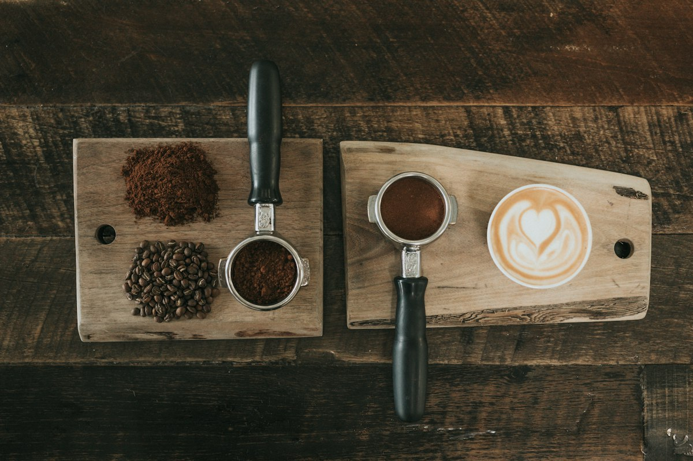
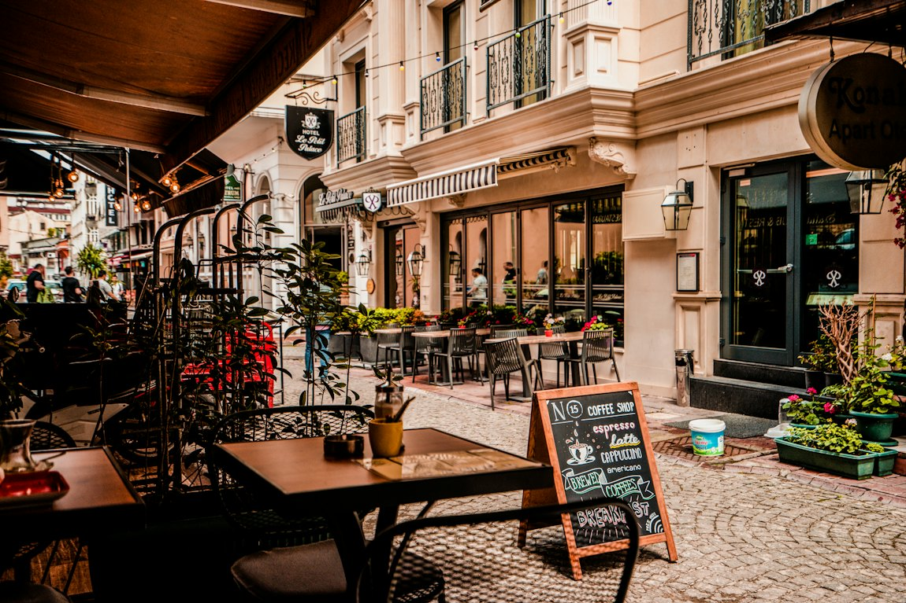
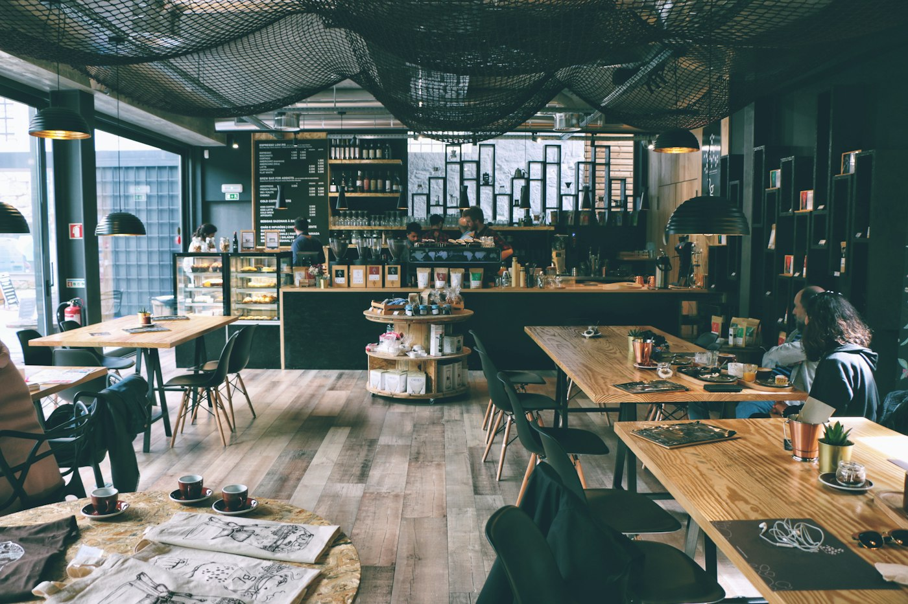

Выбираем зерно
Работаем с двумя обжарщиками. Сорта меняем каждый сезон, сейчас в ротации шесть. Для фильтра и пуроверов варим кофе вручную.
«Крема» открылась в 2021 году. Здесь 40 мест, летом работает веранда во дворе, а по выходным играет винил.
В первые месяцы мы варили кофе на этой кухне и продавали печенье соседям. Так у «Кремы» появились постоянные гости.
Теперь у нас кофейня на сорок мест. Мы по-прежнему сами выбираем сорта: каждый месяц пробуем образцы от двух обжарщиков и оставляем то, что хотим подавать.


Работаем с двумя обжарщиками. Сорта меняем каждый сезон, сейчас в ротации шесть. Для фильтра и пуроверов варим кофе вручную.
Фермерское коровье молоко привозят три раза в неделю. Овсяное делаем в кофейне. Любое альтернативное молоко добавляем без доплаты.
Десерты печём каждое утро. Завтраки подаём до 18:00, сырники не замораживаем. Хлеб для тостов берём в соседней пекарне.
У столов есть розетки, на веранде лежат пледы. Можно прийти поработать или посидеть с одной чашкой сколько нужно.



Покровский бульвар, 4. Семь минут от метро Китай-город.
Адрес и часы работы